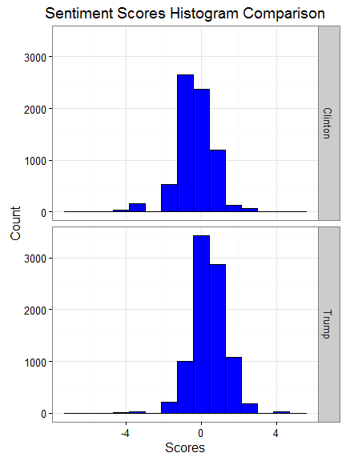
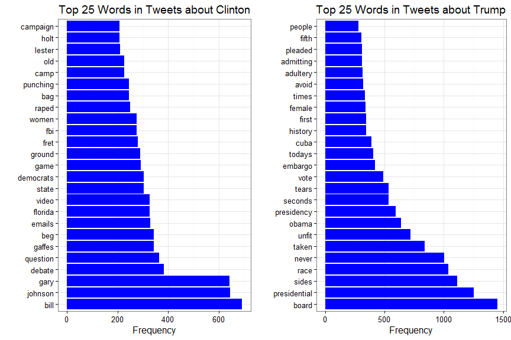

Sentiment Analysis: First Presidential Debate 2016
September 30, 2016
The US presidential election of 2016 is in less than 2 months. After series of presidential primary elections and caucuses, businessman Donald Trump became the Republican Party’s presidential nominee and former Secretary of State Hillary Clinton became the Democratic Party’s presidential nominee. Before November, there are three presidential debates between Clinton and Trump. The first debate just took place several days ago on September 26th.
In this post, I show some results of the sentiment analysis I did using tweets collected after the first debate. All codes for this post can be found in my Github Repository.
Getting Data From Twitter
20,000 tweets were queried using the two candidates’ names (10,000 tweets for each candidate) from Twitter. The twitteR package was used and a brief user guide can be find here. An additional filtering step was carried out to remove tweets containing both names just to simplify the assignment of the sentiment scores to each candidate. (7179 tweets were left only mentioning Clinton’s name and 8854 tweets only mentioning Trump’s name.)
Sentiment Analysis
The sentiment scores were calculated using a lexicon-based method as proposed by Hu and Liu. A list of English positive and negative opinion words or sentiment words compiled by them were used (you can find it here). The different between the number of positive words and the number of negative words in each tweet was used to determine the option orientation or the sentiment score of each tweet.
Note: Before calculating the sentiment scores, the tweets were cleaned by removing punctuations, special characters (@ and #), and URLs.
Now, let’s look at the distribution of sentiment scores for each candidate.


Both candidates have similar variance in terms of their sentiment score distributions with a similar median roughly around 0. And both have outliers or extreme scores (positive and negative). Overall, it is interesting that based on these tweets people seem to be less happy with Clinton than with Trump.
The raw sentiment scores were then used to divide the sentiment into 3 categories below:
- Positive(1):
sentiment score >= 2 - Neutral(0):
-2 < sentiment score < 2 - Negative(-1):
sentiment score <= -2
The distributions of positive, neutral, and negative sentiments for each candidate are shown below:

Again, the majority (about 80%) of tweets are neutral towards both candidates but there are indeed bias! More tweets are negative about Clinton than those that are positive.
Word Frequency Analysis
Another interesting thing we can do with tweets is to a word frequency analysis. The first step is to construct corpus by compiling the tweets. Then, the texts in the corpus are broken into tokens, i.e., single word. After tokenization, document-term matrix is created to describe the frequency of each word that occurs in the corpus. Note that some words are removed from this analysis such as the candidates’ names and English stopwords.
The frequency plots are shown below:


 Not surprisingly, words like “Bill”, “Emails”, “FBI” appear in tweets about Clinton quite frequently. It also looks like a lot of tweets about Clinton also mention Gary Johnson. In tweets about Trump, some frequent words are “race”, “Obama”, and also words like “unfit”!
Not surprisingly, words like “Bill”, “Emails”, “FBI” appear in tweets about Clinton quite frequently. It also looks like a lot of tweets about Clinton also mention Gary Johnson. In tweets about Trump, some frequent words are “race”, “Obama”, and also words like “unfit”!
A Final Note
The analysis shown here is just a sneak peek of the sentiment towards the two candidates. A more thorough analysis could be done with more data (more tweets or incorporating data from other sources), or more complex sentiment metrics. It would also be interesting to dig into those biased data (positive or negative sentiment).